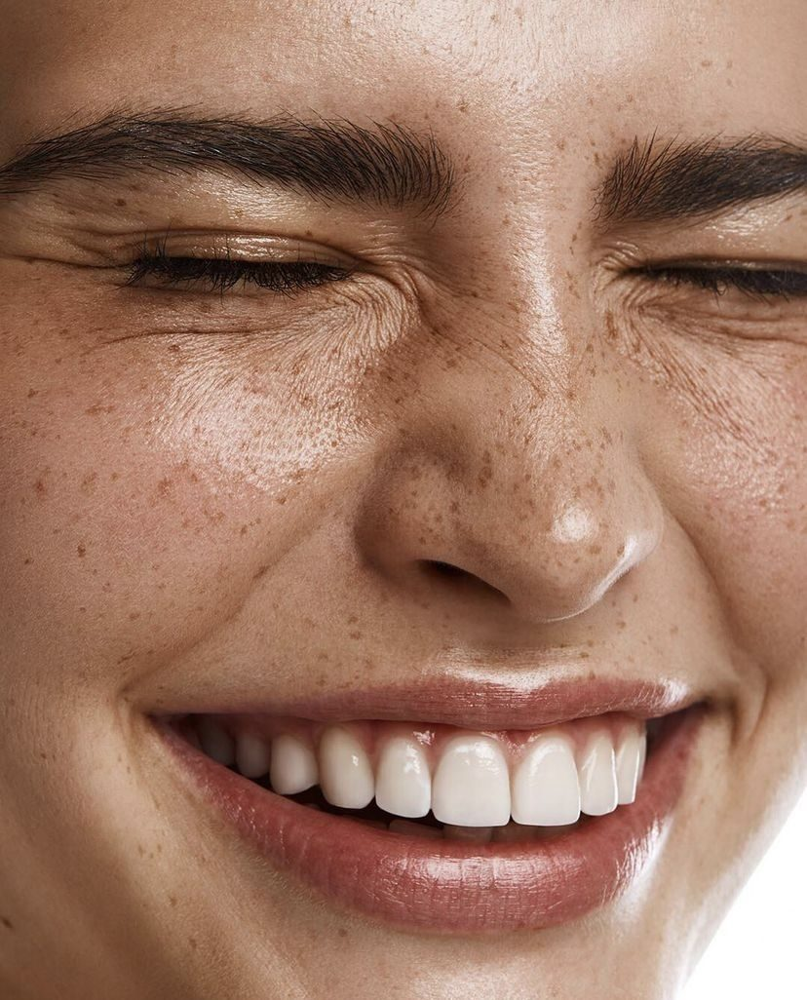
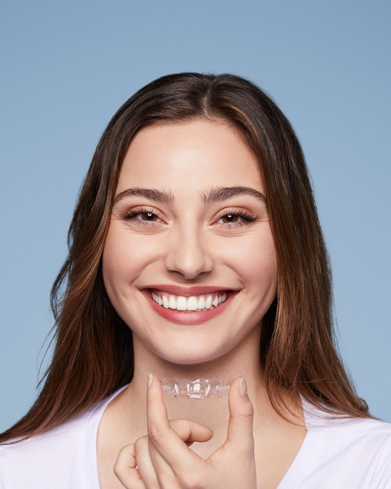
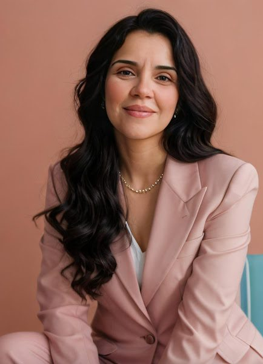

Tratamentos com calma, técnica e acolhimento — para adultos, crianças e pacientes atípicos.

Antes de tratar, precisamos entender você.
Sedação com óxido nitroso para quem tem medo de dentista.
Aparelho fixo e alinhadores invisíveis Sou Smile.
Refinamento com naturalidade, respeitando seus traços.
Consultório lúdico e atendimento leve para os pequenos.
Extrações e procedimentos cirúrgicos com segurança.
Clínica parceira Sou Smile, com acompanhamento próximo da Dra. Antonelia em cada etapa do tratamento.


A Dra. Antonelia Guedes acredita que cada sorriso guarda uma história. Por isso, todo tratamento começa com uma conversa — entendendo seus receios, sua rotina e o que você espera do resultado.
[MINI BIO: formação, pós-graduações, anos de experiência]
Um espaço lúdico, cheio de cor, para a criança se sentir à vontade desde a primeira consulta.
Atender pacientes atípicos exige muito mais do que técnica: exige tempo, escuta e preparo. A Dra. Antonelia se atualiza constantemente em congressos sobre o Transtorno do Espectro Autista.
Estética do sorriso e da face que valoriza quem você já é — sem exageros, com planejamento e segurança.
Avaliações reais de pacientes no Google.
[DEPOIMENTO 1]
[DEPOIMENTO 2]
[DEPOIMENTO 3]
Sim. O atendimento é feito com calma e explicação em cada etapa e, quando indicado, usamos sedação com óxido nitroso para deixar você mais tranquilo.
O ideal é a primeira consulta logo após o nascimento dos primeiros dentes. Assim a criança se acostuma com o consultório de forma leve.
Começa com uma avaliação e escaneamento. Depois você recebe o planejamento digital, os alinhadores e faz consultas periódicas de acompanhamento com a Dra. Antonelia.
É uma análise que ajuda a entender o risco de cárie e outros problemas, permitindo uma prevenção personalizada para você.
[INFORMAR CONVÊNIOS / FORMAS DE PAGAMENTO]